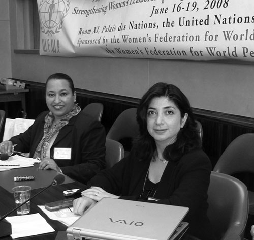

پذيرش > سایت نوشته ها > ظرفیت سازی زنان برای دستیابی به مقامهای تصمیم گیرنده
 گزارشی از صحبت رویا کاشفی گزارشی از صحبت رویا کاشفی

 ظرفیت سازی زنان برای دستیابی به مقامهای تصمیم گیرنده ظرفیت سازی زنان برای دستیابی به مقامهای تصمیم گیرنده
10 تیر 1387 - انجمن پژوهشگران ایران - نسخه قابل چاپ
"آیا شیرین عبادی رو میشناسید؟"
سرها به علامت تائید تکان داده شدند.
"پس قطعا هم میدونید که خانم عبادی برنده جایزه صلح نوبل سال 2003 بوده و در ایران وکیل و مدافع حقوق بشر؟"
دوباره سرها به علامت تائید تکان داده شدند.
"خوب حتما براتون جالبه که بدونید خانم عبادی بدون اجازه همسرشون نمیتونند کار بکنند. اگر ایشان اجازه ندهند خانم عبادی باید دست از کار کردن بکشه."
صورتهایی که با دقت به من گوش میدادند حالت تعجب زده به خودشون گرفتند.
"اگر اون سال هم همسرشون اجازه سفر به خانم عبادی نمیدادند، خانم عبادی نمیتونستند به نروژ برن و جایزه شون رو دریافت کنند."
همه چشم ها گرد شده بودند!
این مثال همیشه همین عکس العمل رو به دنبال داره، ولی این دفعه مخاطبان من زنان اروپایی و غریبه به شرع اسلام نبودند. من داشتم در سالن شماره 11 سازمان ملل درژنو برای صد و بیست زن نماینده کشورهای منطقه خاورمیانه و شمال افریقا صحبت می کردم: سفیر، وزیر، نماینده مجلس ویا دیگر مقامهای تصمیم گیرنده کشورهاشون و اکثریتشون محجبه! البته از ان. جی. او ها هم اونجا بودند.
روز قبلش خانمی که از طرف سوریه صحبت میکرد اشک من رو در آورده بود. آخه حتما میدونید که سوریه سال 2003[1] به کنوانسیون رفع تبعیض از زنان پیوسته و این خانم محجبه و نوه مفتی اعظم، مسئول اجرا و عملی کردن کنوانسیون در سوریه بود. وقتی به صحبت او اشاره کردم و گفتم که وقتی در مجلس شورای اسلامی در سال 2003 بحث پیوستن به این کنوانسیون مطرح شد در مخالفت با اون در قم پیاده روی کردند و خانم مسئول امور زنان و خانواده دفتر ریاست جمهوری سه سال بعد گفت تا زنده هست اجازه نخواهد داد که ایران به این کنواسیون بپیونده[2]، خانم سوریه ای سرش رو از یک طرف به عنوان افتخار بالا برده بود و از طرفی به عنوان تاسف تکان میداد.
چهارشنبه 29 خرداد 1387 بود و من مثل همه این چند ماه گذشته صحبتم رو با نامها و عکسهایی از "روناک صفارزاده" و "هانا عبدی" شروع کرده بودم. بیخبر از اینکه ایندفعه با دفعه های قبل فرق داره و همزمان با صحبت من خبر حکم پنج سال زندان و تبعید هانا در حال پخش شدن بود.
جلسه، دوازدهمین نشست سالانه درباره نقش زنان و صلح در خاورمیانه بود و موضوع تحت بررسی امسال ظرفیت سازی از طریق آموزش و پرورش. چند ماه پیش در لندن من به عنوان مسئول کمیته حقوق بشر انجمن پژوهشگران ایران مقاله ای رو درباره تبعیض قانونی علیه زنان در ایران ارائه داده بودم و به دلیل آشنایی هایی که بوجود آمد به این نشست در سازمان ملل متحد دعوت شدم والبته به نوعی وصله ناجورهم بودم چون همه با حمایت دولتهاشون اونجا بودن و من ...!
به هر حال من صحبتم رو از جای دیگری آغاز کردم و حرفهایی رو که از پیش آماده کرده بودم نزدم. چون صحبت من بعد از شنیدن گزارش های مکرر و مشابه از پیشرفت کشورهای عربی و مسلمان منطقه در حوزه زنان بود. هیچکس نمی گفت که همه چیز ایده آله ولی همه از حمایت دولتی و اراده به بهبود وضعیت زنان کشورشان حرف میزدند. شنیدم که به چه ترتیب سهمیه بندی جنسی اما از نوع مثبتش به نفع زنان در زمینه تحصیل و اشتغال مطرح شده و اینکه به چه ترتیب حضور بیشتر و بیشتر زنان در صحنه اجتماعی تشویق میشه.
حسودیم شد!
عصبانی شدم!
مگه اونها مسلمون نبودند؟
مگه شرع اسلام در کشورهای اونها اجرا نمیشه؟
پس اونها چی میگن و ما چی میگیم؟
از یمن و کویت و بحرین و عمان و سوریه ... گرفته تا تونس و مصر و لبنان و اردن از دستاوردها و پیشرفتهای خودشون تعریف کردند. حتی افغانستان و عراق تحت اشغال و جنگ و خشونت، قوانین اساسی شون رو به نحوی نوشتند که نه تنها زن ستیز نیست که برای برابری و پیشرفت زنان هم قانون آوردند.
بنابراین بحث اساسی ام رو که بر پایه تحقیق گسترده سال گذشته انجمن پژوهشگران ایران[3] بود (که بسیار جالب و منعکس کننده تحولات امروز جامعه ایران میباشه) مطرح نکردم. قبل از ظرقیت سازی باید زمینه های اون آماده بشه. دیدم باید از پایه حرف زد. از برابری و فرهنگ سازی. از شناخت موانع و راه حل پیدا کردن. و مهمتر از همه از باور داشتن، از نترسیدن، از شجاعت و پا جلو گذاشتن و از قبول پرداخت هزینه برای ساختن آینده سالم بچه هامون. یعنی از جنبش امروز برابرطلبی در ایران.
گفتم که تبعیض علیه ما زنان ایرانی، از قبل از بدنیا آمدنمون شروع میشه. که اگر جنین دختر چهارماهه ای بخاطراتفاقی یا تصادفی از بین بره دیه اش نصف دیه جنین پسره[4].
گفتم با اینکه بخاطر مبارزات زنان سن ازدواج دختران ما به 13 سال بالا رفته، دختر بچه های نه ساله ایرانی به حکم قاضی هنوز شوهر داده میشن[5] و بر اساس آمار سرشماری سال [6]1385 در گروه سنی دختران 10- 14 ساله 4741 دختر بیوه و مطلقه داریم.
گفت
ارسال به
بالاترین
،
توییتر
،
فریندفید
،
فیسبوک
در همين بخش :
 یک خبر تلخ؟ یک قانونشکنی؟ یک تصمیم بخشنامهای جدید؟ یک خبر تلخ؟ یک قانونشکنی؟ یک تصمیم بخشنامهای جدید؟
چرا بایست به سکسوالیته پرداخت؟ / نفیسه آزاد
آزارجنسی خانگی؛ «قربانی» نه، «نجات یافته»
زنان، بزرگترین بازندگان بهار عرب
سانسور از دیدگاه جنسیتی/الهه امانی
ديگر بخش ها :
طرح یک میلیون امضا
|
مقالات
|
سایت نوشته ها
|
اخبار
|
گزارش كمپين
|
گفت و گو
|
علیه سکوت
|
كوچه به كوچه
|
نامه های شما
|
گزارش ویژه
|
گفتگو با اعضا
|
ویژه سالگرد کمپین
|
تصویر برابری
|
دل آرام علی
|
تریبون
|
مقالات
|
تاریخ شفاهی
|
خارج از چارچوب
|
کتابخانه
|
درباره کمپین
|
کمپین در شهرها
|
کمپین در بند
|
صدای تغییر
|
ویژه 22 خرداد
|
لایحه حمایت از خانواده
|
گالری
|
عشا مومنی
|
امیر یعقوبعلی
|
خدیجه مقدم
|
راحله عسگری زاده و نسیم خسروی
|
پروین اردلان،جلوه جواهری، مریم حسین خواه، ناهید کشاورز
|
زینب پیغمبرزاده
|
سعیده امین، سارا ایمانیان، محبوبه حسین زاده، ناهید کشاورز و همایون نامی
|
احترام شادفر
|
نسیم سرابندی زاده،فاطمه دهدشتی
|
وبلاگ مهمان
|
پرونده خرم آباد
|
دستگیری ها
|
مریم مالک
|
پرستو اللهیاری
|
مهرنوش اعتمادی
|
سمیه رشیدی
|
Other Languages
|
همراهان
|
«فراخوان کمپین ده روز با بهاره هدایت»
| English
|